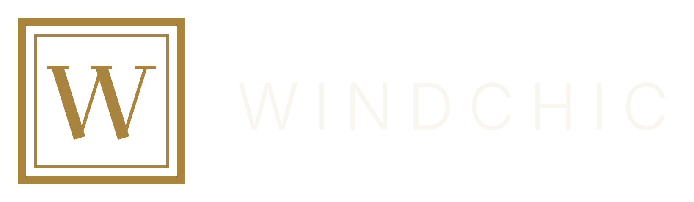
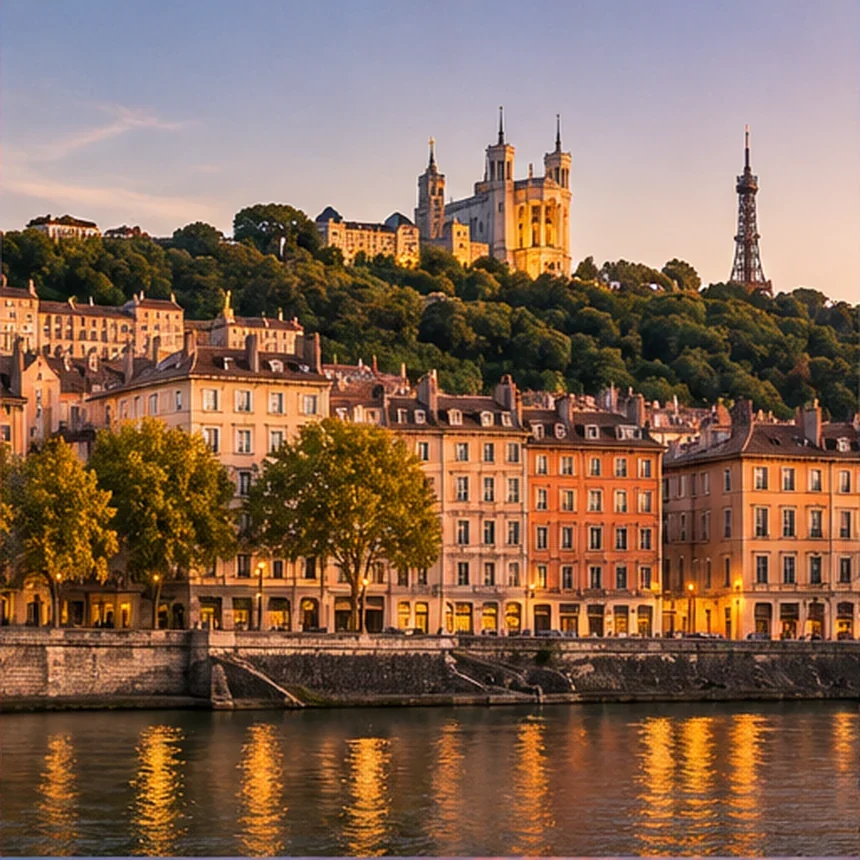
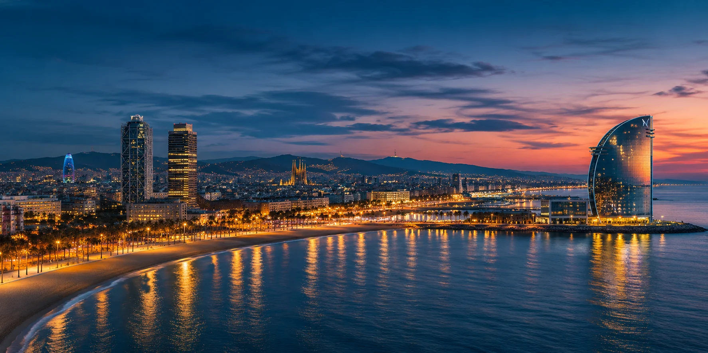
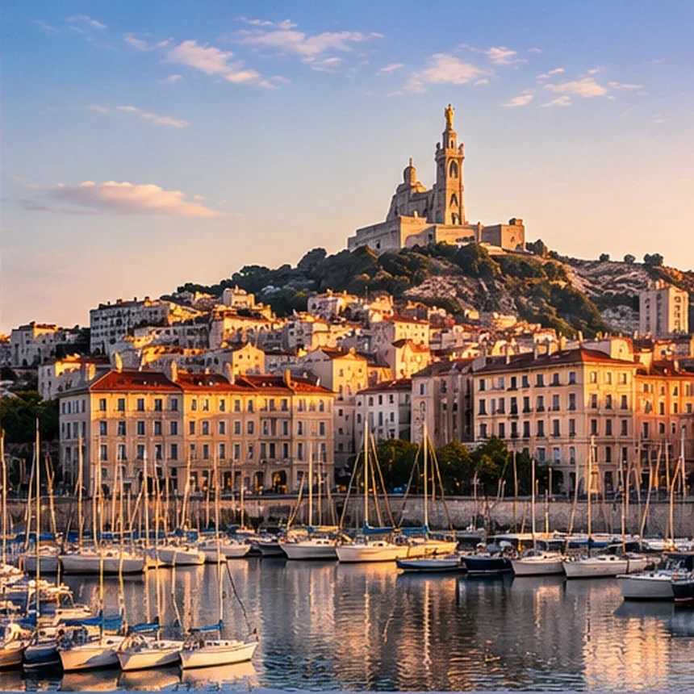
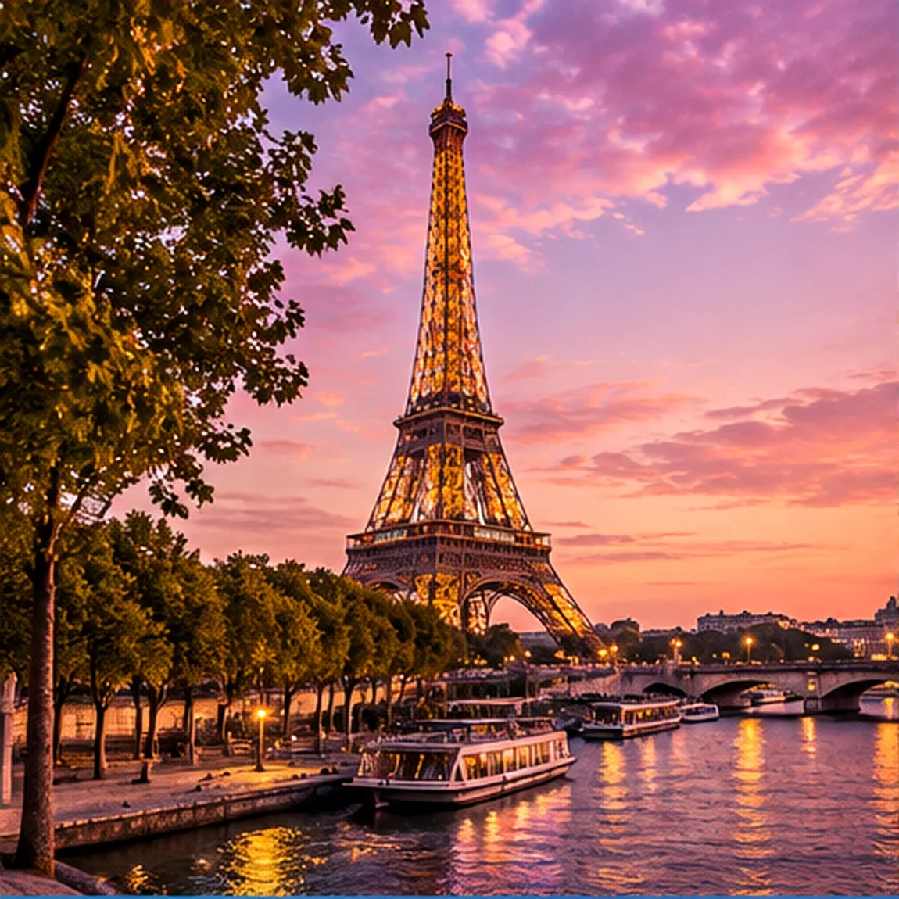
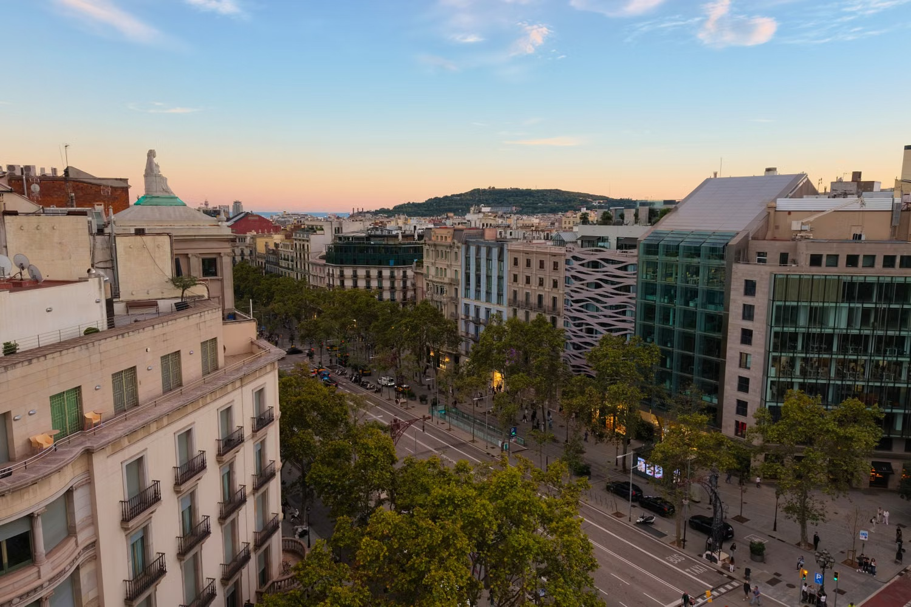

↗
↗Ségovie / Touchscreen systems
10 interactive Windows touchscreen kiosks for a press event.


Selected WINDCHIC project files, earlier team experience and opportunities in development.
Not all fifteen entries are completed WINDCHIC assignments. Filter to see their status and open each file for the challenge and approach.
↗10 interactive Windows touchscreen kiosks for a press event.

↗A six-dancer flash-mob brief for an exhibitor at Piscine Global.
 ↗
↗Two containers. Ten handlers. Four days of coordinated movement and assembly.
 ↗
↗Two near-13-inch Android tablets with mobile data and display connectivity.

↗A coordinated travel and local transport plan for three overseas delegates.
↗Local labour, equipment and site logistics for a cross-border deployment.

↗Urgent handling of materials left in storage after a previous exhibition.
 ↗
↗Commercial presence and multilingual discussions with trade-show visitors.

↗Cross-cultural commercial discussions for an overseas brand.

↗Commercial interactions for an outdoor-products exhibitor.
Commercial itinerary and introductions beyond the exhibition stand.
↗Specialized display coordination for overseas brand activations.
 ↗
↗Supplier discovery for specialist business and event equipment.
Operational and commercial support designed for international exhibitors.
A future programme for exhibitors seeking local execution support.